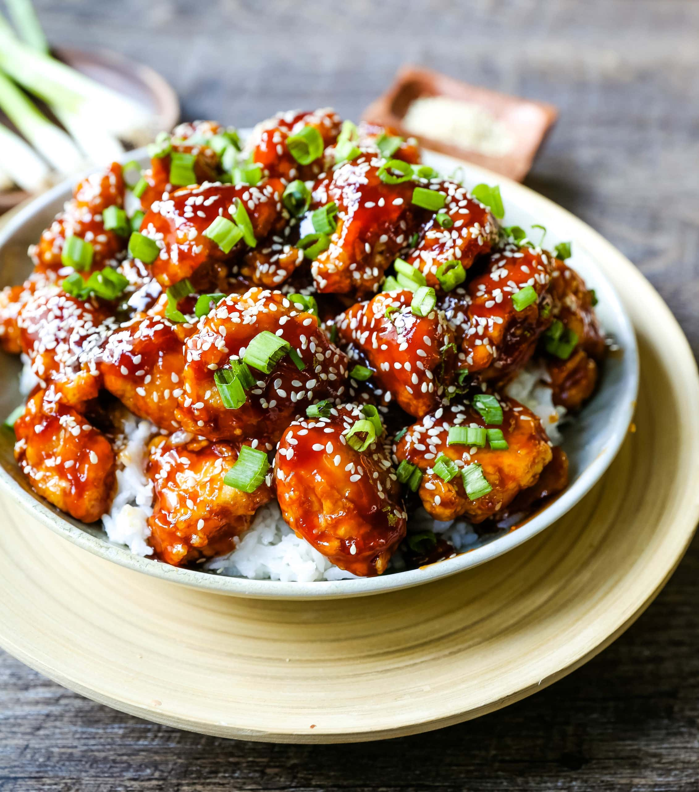

Sesame Chicken

Description
Here is how you make Homemade Chinese Sesame Chicken made with crispy fried chicken covered in a sweet and sour sauce. Inspired by MODERNhoney.
Ingredients
- 4 Boneless Skinless Chicken Breasts (cut into bite-size pieces)
- 3 large eggs
- 1/3 cup Flour
- 1/3 cup Cornstarch
- Salt
- Oil (for frying)
Sesame Sauce:
- 1/2 cup Honey
- 3 Tablespoons Rice Vinegars
- 2 Tablespoons Dark Brown Sugar
- 1/4 cup Soy Sauce
- 1/4 cup Ketchup
- 1/2 to 1 teaspoon Red Chili Flakes
- 1/4 teaspoon Garlic Powder
- 1/4 teaspoon Ginger Powder
- 2 teaspoons Cornstarch
Garnish:
- 3 Tablespoons Sesame Seeds
- Green Onions (green part sliced)
- Rice
Steps
To make Chicken:
- Place flour and cornstarch in a shallow dish or pie plate. Add a hefty pinch of salt. Stir.
- Whisk eggs in a shallow dish.Dip chicken pieces in the egg mixture and then flour mixture. Place on the plate.
- Heat 2 -3 inches of oil in a heavy-bottomed pot over medium-high heat. Using a thermometer, watch for it to reach 350 degrees. Working in batches, cook several chicken pieces at a time. Cook for 2 - 3 minutes, turning often until golden brown. *May need longer depending on temperature of the oil.
- Place chicken on a paper-towel-lined plate. Repeat.
Sesame Sweet and Sour Sauce:
- In a medium pot, add honey, vinegar, brown sugar, soy sauce, ketchup, ginger, garlic, and red chili flakes. Heat for 3 minutes. In a small bowl, whisk cornstarch with 1 Tablespoon of water to form a paste. Add to sesame sauce and whisk together. Continue to cook for 5 minutes, until the mixture begins to thicken. Once the sauce is thickened, remove from heat and toss with fried chicken.
- You may reserve some of the sauce to place on rice. Serve it with sesame seeds and a sprinkling of green onions.
Home